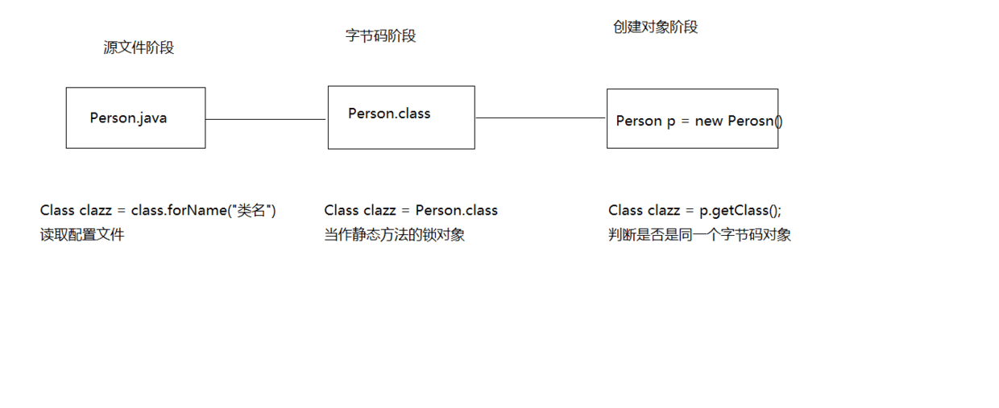

028-day27-反射
day27授课目录：
27.01_反射(类的加载概述和加载时机)¶
- A:类的加载概述
-
当程序要使用某个类时，如果该类还未被加载到内存中，则系统会通过加载，连接，初始化三步来实现对这个类进行初始化。
- 加载
- 就是指将class文件读入内存，并为之创建一个Class对象。任何类被使用时系统都会建立一个Class对象。
- 连接
-
验证 是否有正确的内部结构，并和其他类协调一致
- 准备 负责为类的静态成员分配内存，并设置默认初始化值
- 解析 将类的二进制数据中的符号引用替换为直接引用
-
初始化 就是我们以前讲过的初始化步骤
- B:加载时机
- 创建类的实例
- 访问类的静态变量，或者为静态变量赋值
- 调用类的静态方法
- 使用反射方式来强制创建某个类或接口对应的java.lang.Class对象
- 初始化某个类的子类
- 直接使用java.exe命令来运行某个主类
27.02_反射(类加载器的概述和分类)¶
- A:类加载器的概述
- 负责将.class文件加载到内存中，并为之生成对应的Class对象。虽然我们不需要关心类加载机制，但是了解这个机制我们就能更好的理解程序的运行。
- B:类加载器的分类
- Bootstrap ClassLoader 根类加载器
- Extension ClassLoader 扩展类加载器
- Sysetm ClassLoader 系统类加载器
- C:类加载器的作用
- Bootstrap ClassLoader 根类加载器
- 也被称为引导类加载器，负责Java核心类的加载
- 比如System,String等。在JDK中JRE的lib目录下rt.jar文件中
- Extension ClassLoader 扩展类加载器
- 负责JRE的扩展目录中jar包的加载。
- 在JDK中JRE的lib目录下ext目录
- Sysetm ClassLoader 系统类加载器
- 负责在JVM启动时加载来自java命令的class文件，以及classpath环境变量所指定的jar包和类路径
27.03_反射(反射概述)¶
-
A:反射概述
-
JAVA反射机制是在运行状态中，对于任意一个类，都能够知道这个类的所有属性和方法；
-
对于任意一个对象，都能够调用它的任意一个方法和属性；
-
这种动态获取的信息以及动态调用对象的方法的功能称为java语言的反射机制。
-
要想解剖一个类,必须先要获取到该类的字节码文件对象。
-
而解剖使用的就是Class类中的方法，所以先要获取到每一个字节码文件对应的Class类型的对象。

-
-
B:三种方式
-
a:Object类的getClass()方法,判断两个对象是否是同一个字节码文件
- b:静态属性class,锁对象
- c:Class类中静态方法forName(),读取配置文件
-
C:案例演示
-
获取class文件对象的三种方式
```java package com.heima.reflect;
import com.heima.bean.Person;
public class Demo1_Reflect {
/** * @param args * @throws ClassNotFoundException */ public static void main(String[] args) throws ClassNotFoundException { Class clazz1 = Class.forName("com.heima.bean.Person");//Class类中静态方法forName(),读取配置文件 Class clazz2 = Person.class;//态属性class,锁对象 Person p = new Person();//Object类的getClass()方法,判断两个对象是否是同一个字节码文件 Class clazz3 = p.getClass(); System.out.println(clazz1 == clazz2); System.out.println(clazz2 == clazz3); //输出// true // true
}
} ```
27.04_反射(Class.forName()读取配置文件举例)¶
-
榨汁机(Juicer)榨汁的案例
-
分别有水果(Fruit)苹果(Apple)香蕉(Banana)桔子(Orange)榨汁(squeeze)
配置文件 后缀使用的是.properties
java com.heima.reflect.Apple案例代码
```java package com.heima.reflect;
import java.io.BufferedReader; import java.io.FileReader; import java.io.IOException;
public class Demo2_Reflect {
/** * * 榨汁机(Juicer)榨汁的案例 分别有水果(Fruit)苹果(Apple)香蕉(Banana)桔子(Orange)榨汁(squeeze) * * @throws IOException */ public static void main(String[] args) throws Exception { // Juicer j = new Juicer(); //创建榨汁机用的所多态 // //j.run(new Apple()); // //j.run(new Orange()); // j.run(new Apple()); // j.run(new Orange()); BufferedReader br = new BufferedReader(new FileReader( "config.properties")); Class clazz = Class.forName(br.readLine()); // 获取该类的字节码文件 Fruit f = (Fruit) clazz.newInstance(); // 水果的对象指向了苹果对象创建实例对象 Juicer j = new Juicer(); // 创建榨汁机 j.run(f); }}
interface Fruit { // 实现一个水果的接口 public void squeeze(); }
class Apple implements Fruit { // 继承的时候需要重写接口中的方法 public void squeeze() { System.out.println("榨出一杯苹果汁儿"); } }
class Orange implements Fruit { public void squeeze() { System.out.println("榨出一杯橘子汁儿"); } }
class Juicer { /* * public void run(Apple a) { a.squeeze(); } * * public void run(Orange o) { o.squeeze(); } */
public void run(Fruit f) { // 这里传递近来的是父类引用的子类对象 f.squeeze(); }} ```
27.05_反射(通过反射获取带参构造方法并使用)¶
-
Constructor
-
Class类的newInstance()方法是使用该类无参的构造函数创建对象, 如果一个类没有无参的构造函数, 就不能这样创建了,可以调用Class类的getConstructor(String.class,int.class)方法获取一个指定的构造函数然后再调用Constructor类的newInstance("张三",20)方法创建对象
```java package com.heima.reflect;
import java.lang.reflect.Constructor;
import com.heima.bean.Person;
public class Demo3_Constructor {
/** * Class类的newInstance()方法是使用该类无参的构造函数创建对象, 如果一个类没有无参的构造函数, * 就不能这样创建了,可以调用Class类的getConstructor * (String.class,int.class)方法获取一个指定的构造函数然后再调用Constructor类的newInstance * ("张三",20)方法创建对象 * @throws Exception */ public static void main(String[] args) throws Exception { Class clazz = Class.forName("com.heima.bean.Person"); //Person p = (Person) clazz.newInstance(); 通过无参构造创建对象,类中没有无参构造就不能用了 //System.out.println(p); Constructor c = clazz.getConstructor(String.class,int.class); //获取有参构造 Person p = (Person) c.newInstance("张三",23); //通过有参构造创建对象 System.out.println(p); //这里重写了tostring方法 }}
```
27.06_反射(通过反射获取成员变量并使用)¶
-
Field
-
Class.getField(String)方法可以获取类中的指定字段(可见的), 如果是私有的可以用getDeclaedField("name")方法获取,通过set(obj, "李四")方法可以设置指定对象上该字段的值, 如果是私有的需要先调用setAccessible(true)设置访问权限,用获取的指定的字段调用get(obj)可以获取指定对象中该字段的值
```java package com.heima.reflect;
import java.lang.reflect.Constructor; import java.lang.reflect.Field;
import com.heima.bean.Person;
public class Demo4_Field {
/** * Class.getField(String)方法可以获取类中的指定字段(可见的), * 如果是私有的可以用getDeclaedField("name")方法获取,通过set(obj, "李四")方法可以设置指定对象上该字段的值, * 如果是私有的需要先调用setAccessible(true)设置访问权限,用获取的指定的字段调用get(obj)可以获取指定对象中该字段的值 * @throws Exception */ public static void main(String[] args) throws Exception { Class clazz = Class.forName("com.heima.bean.Person"); Constructor c = clazz.getConstructor(String.class,int.class); //获取有参构造 Person p = (Person) c.newInstance("张三",23); //通过有参构造创建对象 //Field f = clazz.getField("name"); //获取姓名字段 //f.set(p, "李四"); //修改姓名的值 Field f = clazz.getDeclaredField("name"); //暴力反射获取字段 f.setAccessible(true); //去除私有权限 f.set(p, "李四"); System.out.println(p); }}
```
27.07_反射(通过反射获取方法并使用)¶
-
Method
-
Class.getMethod(String, Class...) 和 Class.getDeclaredMethod(String, Class...)方法可以获取类中的指定方法,调用invoke(Object, Object...)可以调用该方法,Class.getMethod("eat") invoke(obj) Class.getMethod("eat",int.class) invoke(obj,10)
```java package com.heima.reflect;
import java.lang.reflect.Constructor; import java.lang.reflect.Method;
import com.heima.bean.Person;
public class Demo5_Method {
/** * Class.getMethod(String, Class...) 和 Class.getDeclaredMethod(String, * Class...)方法可以获取类中的指定方法,调用invoke(Object, * Object...)可以调用该方法,Class.getMethod("eat") invoke(obj) * Class.getMethod("eat",int.class) invoke(obj,10) * * @throws Exception */ public static void main(String[] args) throws Exception { Class clazz = Class.forName("com.heima.bean.Person"); Constructor c = clazz.getConstructor(String.class, int.class); // 获取有参构造 Person p = (Person) c.newInstance("张三", 23); // 通过有参构造创建对象 Method m = clazz.getMethod("eat"); // 获取eat方法 m.invoke(p);// 使用invoke执行方法 Method m2 = clazz.getMethod("eat", int.class); // 获取有参的eat方法 m2.invoke(p, 10); }}
```
27.08_反射(通过反射越过泛型检查)¶
-
A:案例演示
-
ArrayList
的一个对象，在这个集合中添加一个字符串数据，如何实现呢？ 运行期泛型就被擦除了 ```java package com.heima.test;
import java.lang.reflect.Method; import java.util.ArrayList;
public class Test1 {
/** * @param args * ArrayList<Integer>的一个对象，在这个集合中添加一个字符串数据，如何实现呢？ * 泛型只在编译期有效,在运行期会被擦除掉 * @throws Exception */ public static void main(String[] args) throws Exception { ArrayList<Integer> list = new ArrayList<>(); list.add(111); list.add(222); Class clazz = Class.forName("java.util.ArrayList"); // 获取字节码对象 Method m = clazz.getMethod("add", Object.class); // 获取add方法 m.invoke(list, "abc"); // 本来是不能存入字符串的通过反射,存进去了字符串 System.out.println(list); }}
```
执行输出
java [111, 222, abc]
27.09_反射(通过反射写一个通用的设置某个对象的某个属性为指定的值)¶
-
A:案例演示
-
public void setProperty(Object obj, String propertyName, Object value){}，此方法可将obj对象中名为propertyName的属性的值设置为value。
tool类
```java package com.heima.test;
import java.lang.reflect.Field;
public class Tool { //此方法可将obj对象中名为propertyName的属性的值设置为value。 public void setProperty(Object obj, String propertyName, Object value) throws Exception { Class clazz = obj.getClass(); //获取字节码对象 Field f = clazz.getDeclaredField(propertyName); //暴力反射获取字段 f.setAccessible(true); //去除权限 f.set(obj, value); } }
```
测试类:
```java package com.heima.test;
public class Test3 {
/** * * A:案例演示 * public void setProperty(Object obj, String propertyName, Object value){}， * 此方法可将obj对象中名为propertyName的属性的值设置为value。 * @throws Exception */ public static void main(String[] args) throws Exception { Student s = new Student("张三", 23); System.out.println(s); Tool t = new Tool(); t.setProperty(s, "name", "李四"); System.out.println(s); }}
class Student { private String name; private int age; public Student() { super();
} public Student(String name, int age) { super(); this.name = name; this.age = age; } public String getName() { return name; } public void setName(String name) { this.name = name; } public int getAge() { return age; } public void setAge(int age) { this.age = age; } @Override public String toString() { return "Student [name=" + name + ", age=" + age + "]"; }} ```
27.10_反射(练习)¶
-
已知一个类，定义如下：
-
package cn.itcast.heima;
- public class DemoClass { public void run() { System.out.println("welcome to heima!"); } }
- (1) 写一个Properties格式的配置文件，配置类的完整名称。
- (2) 写一个程序，读取这个Properties配置文件，获得类的完整名称并加载这个类，用反射的方式运行run方法。
配置文件
java com.heima.test.DemoClassDemo_class文件
```java package com.heima.test;
public class DemoClass { public void run() { System.out.println("welcome to heima!"); } }
```
测试
```java package com.heima.test;
import java.io.BufferedReader; import java.io.FileNotFoundException; import java.io.FileReader;
public class Test2 {
/** * * 已知一个类，定义如下： * package cn.itcast.heima; * public class DemoClass { public void run() { System.out.println("welcome to heima!"); } } * (1) 写一个Properties格式的配置文件，配置类的完整名称。 * (2) 写一个程序，读取这个Properties配置文件，获得类的完整名称并加载这个类，用反射的方式运行run方法。 * @throws Exception */ public static void main(String[] args) throws Exception { BufferedReader br = new BufferedReader(new FileReader("xxx.properties")); //创建输入流关联xxx.properties Class clazz = Class.forName(br.readLine()); //读取配置文件中类名,获取字节码对象 DemoClass dc = (DemoClass) clazz.newInstance(); //通过字节码对象创建对象 dc.run(); }}
```
27.11_反射(动态代理的概述和实现)¶
-
A:动态代理概述
-
代理：本来应该自己做的事情，请了别人来做，被请的人就是代理对象。
- 举例：春节回家买票让人代买
- 动态代理：在程序运行过程中产生的这个对象,而程序运行过程中产生对象其实就是我们刚才反射讲解的内容，所以，动态代理其实就是通过反射来生成一个代理
- 在Java中java.lang.reflect包下提供了一个Proxy类和一个InvocationHandler接口，通过使用这个类和接口就可以生成动态代理对象。JDK提供的代理只能针对接口做代理。我们有更强大的代理cglib，Proxy类中的方法创建动态代理类对象
- public static Object newProxyInstance(ClassLoader loader,Class<?>[] interfaces,InvocationHandler h)
- 最终会调用InvocationHandler的方法
- InvocationHandler Object invoke(Object proxy,Method method,Object[] args)
接口
```java package com.heima.动态代理;
public interface User { //接口 public void add();
public void delete();
}
```
实现接口的类
```java package com.heima.动态代理;
public class UserImp implements User {
@Override public void add() { //System.out.println("权限校验"); System.out.println("添加功能"); //System.out.println("日志记录"); } @Override public void delete() { //System.out.println("权限校验"); System.out.println("删除功能"); //System.out.println("日志记录"); }}
```
测试类
```java package com.heima.动态代理;
import java.lang.reflect.Proxy;
public class Test {
/** * @param args */ public static void main(String[] args) { UserImp ui = new UserImp(); ui.add(); ui.delete(); }} ```
动态代理的实现
```java package com.heima.动态代理;
import java.lang.reflect.InvocationHandler; import java.lang.reflect.Method;
public class MyInvocationHandler implements InvocationHandler { private Object target;
public MyInvocationHandler(Object target) { this.target = target; } @Override public Object invoke(Object proxy, Method method, Object[] args) throws Throwable { System.out.println("权限校验"); method.invoke(target, args); //执行被代理target对象的方法 System.out.println("日志记录"); return null; }}
```
student接口
```java package com.heima.动态代理;
public interface Student { public void login();
public void submit();
}
```
student实现类
```java package com.heima.动态代理;
public class StudentImp implements Student {
@Override public void login() { System.out.println("登录"); } @Override public void submit() { System.out.println("提交"); }}
```
测试
```java package com.heima.动态代理;
import java.lang.reflect.Proxy;
public class Test {
/** * @param args */ public static void main(String[] args) { /*UserImp ui = new UserImp(); ui.add(); ui.delete(); System.out.println("-------------------------------");*/ /* * public static Object newProxyInstance(ClassLoader loader,Class<?>[] interfaces, * InvocationHandler h) */ /*MyInvocationHandler m = new MyInvocationHandler(ui); User u = (User)Proxy.newProxyInstance(ui.getClass().getClassLoader(), ui.getClass().getInterfaces(), m); u.add(); u.delete();*/ StudentImp si = new StudentImp(); si.login(); si.submit(); System.out.println("-------------------------------"); MyInvocationHandler m = new MyInvocationHandler(si); Student s = (Student)Proxy.newProxyInstance(si.getClass().getClassLoader(), si.getClass().getInterfaces(), m); s.login(); s.submit(); }}
```
27.12_设计模式(模版(Template)设计模式概述和使用)¶
-
A:模版设计模式概述
-
模版方法模式就是定义一个算法的骨架，而将具体的算法延迟到子类中来实现
-
B:优点和缺点
-
a:优点
- 使用模版方法模式，在定义算法骨架的同时，可以很灵活的实现具体的算法，满足用户灵活多变的需求
-
b:缺点
-
如果算法骨架有修改的话，则需要修改抽象类 1,装饰 2,单例 3,简单工厂 4,工厂方法 5,适配器 6,模版
```java package com.heima.模版方法设计模式; public class Demo1_Template { /** * @param args */ public static void main(String[] args) { /*long start = System.currentTimeMillis(); for(int i = 0; i < 1000000; i++) { System.out.println("x"); } long end = System.currentTimeMillis(); System.out.println(end - start);*/ Demo d = new Demo(); System.out.println(d.getTime()); } } abstract class GetTime { public final long getTime() { long start = System.currentTimeMillis(); code(); long end = System.currentTimeMillis(); return end - start; } public abstract void code(); } class Demo extends GetTime { @Override public void code() { int i = 0; while(i < 100000) { System.out.println("x"); i++; } } } ```
27.13_JDK5新特性(自己实现枚举类)¶
-
A:枚举概述
-
是指将变量的值一一列出来,变量的值只限于列举出来的值的范围内。举例：一周只有7天，一年只有12个月等。
-
B:回想单例设计模式：单例类是一个类只有一个实例
-
那么多例类就是一个类有多个实例，但不是无限个数的实例，而是有限个数的实例。这才能是枚举类。
-
C:案例演示
-
自己实现枚举类 1,自动拆装箱 2,泛型 3,可变参数 4,静态导入 5,增强for循环 6,互斥锁 7,枚举
one
```java package com.heima.枚举;
public class Week {
public static final Week MON = new Week(); //自定义了三个实例对象 public static final Week TUE = new Week(); public static final Week WED = new Week(); private Week(){} //私有构造,不让其他类创建本类对象}
```
two
```java package com.heima.枚举;
public class Week2 {
public static final Week2 MON = new Week2("星期一"); public static final Week2 TUE = new Week2("星期二"); public static final Week2 WED = new Week2("星期三"); private String name; private Week2(String name){ this.name = name; } //私有构造,不让其他类创建本类对象 public String getName() { return name; }}
```
three
```java package com.heima.枚举;
public class Week2 {
public static final Week2 MON = new Week2("星期一"); public static final Week2 TUE = new Week2("星期二"); public static final Week2 WED = new Week2("星期三"); private String name; private Week2(String name){ this.name = name; } //私有构造,不让其他类创建本类对象 public String getName() { return name; }}
```
测试使用
```java package com.heima.枚举;
public class Demo1_Enum {
/** * @param args */ public static void main(String[] args) { //demo1(); //demo2(); Week3 mon = Week3.MON; //通过类名调取对象 mon.show(); } public static void demo2() { Week2 mon = Week2.MON; System.out.println(mon.getName()); } public static void demo1() { Week mon = Week.MON; Week tue = Week.TUE; Week wed = Week.WED; System.out.println(mon); }}
```
27.14_JDK5新特性(通过enum实现枚举类)¶
-
A:案例演示
-
通过enum实现枚举类
one
```java package com.heima.枚举2;
public enum Week { MON,TUE,WED; }
```
two
```java package com.heima.枚举2;
public enum Week2 { MON("星期一"),TUE("星期二"),WED("星期三");
private String name; private Week2(String name) { this.name = name; } public String getName() { return name; } public String toString() { return name; }}
```
Three
```java package com.heima.枚举2;
public enum Week3 { MON("星期一"){ public void show() { System.out.println("星期一"); } },TUE("星期二"){ public void show() { System.out.println("星期二"); } },WED("星期三"){ public void show() { System.out.println("星期三"); } };
private String name; private Week3(String name) { this.name = name; } public String getName() { return name; } public abstract void show();}
```
测试1
```java package com.heima.枚举2;
public class Demo1_Enum {
/** * @param args */ public static void main(String[] args) { //demo1(); //demo2(); //demo3(); Week3 mon = Week3.TUE; switch (mon) { case MON: System.out.println("星期一"); break; case TUE: System.out.println("星期二"); break; } } public static void demo3() { Week3 mon = Week3.MON; mon.show(); } public static void demo2() { Week2 mon = Week2.MON; System.out.println(mon.getName()); } public static void demo1() { Week mon = Week.MON; System.out.println(mon); }}
```
测试2
```java package com.heima.枚举2;
public class Demo2_Enum {
/** * int ordinal() * int compareTo(E o) * String name() * String toString() * <T> T valueOf(Class<T> type,String name) * values() * 此方法虽然在JDK文档中查找不到，但每个枚举类都具有该方法，它遍历枚举类的所有枚举值非常方便 */ public static void main(String[] args) { //demo1();// Week2 mon = Week2.valueOf(Week2.class, "MON"); //通过字节码对象获取枚举项 // System.out.println(mon);
Week2[] arr = Week2.values(); for (Week2 week2 : arr) { System.out.println(week2); } } public static void demo1() { Week2 mon = Week2.MON; Week2 tue = Week2.TUE; Week2 wed = Week2.WED; /*System.out.println(mon.ordinal()); //枚举项都是有编号的 System.out.println(tue.ordinal()); System.out.println(wed.ordinal()); System.out.println(mon.compareTo(tue)); //比较的是编号 System.out.println(mon.compareTo(wed));*/ System.out.println(mon.name()); //获取实例名称 System.out.println(mon.toString()); //调用重写之后的toString方法 }}
```
27.15_JDK5新特性(枚举的注意事项)¶
- A:案例演示
- 定义枚举类要用关键字enum
- 所有枚举类都是Enum的子类
- 枚举类的第一行上必须是枚举项，最后一个枚举项后的分号是可以省略的，但是如果枚举类有其他的东西，这个分号就不能省略。建议不要省略
- 枚举类可以有构造器，但必须是private的，它默认的也是private的。
- 枚举类也可以有抽象方法，但是枚举项必须重写该方法
- 枚举在switch语句中的使用
27.16_JDK5新特性(枚举类的常见方法)¶
- A:枚举类的常见方法
- int ordinal()
- int compareTo(E o)
- String name()
- String toString()
T valueOf(Class type,String name) - values()
- 此方法虽然在JDK文档中查找不到，但每个枚举类都具有该方法，它遍历枚举类的所有枚举值非常方便
- B:案例演示
- 枚举类的常见方法
27.17_JDK7新特性(JDK7的六个新特性回顾和讲解)¶
- A:二进制字面量
- B:数字字面量可以出现下划线
- C:switch 语句可以用字符串
- D:泛型简化,菱形泛型
- E:异常的多个catch合并,每个异常用或|
- F:try-with-resources 语句
27.18_JDK8新特性(JDK8的新特性)¶
- 接口中可以定义有方法体的方法,如果是非静态,必须用default修饰
- 如果是静态的就不用了
class Test { public void run() { final int x = 10; class Inner { public void method() { System.out.println(x); } } Inner i = new Inner(); i.method(); } } 局部内部类在访问他所在方法中的局部变量必须用final修饰,为什么? 因为当调用这个方法时,局部变量如果没有用final修饰,他的生命周期和方法的生命周期是一样的,当方法弹栈,这个局部变量也会消失,那么如果局部内部类对象还没有马上消失想用这个局部变量,就没有了,如果用final修饰会在类加载的时候进入常量池,即使方法弹栈,常量池的常量还在,也可以继续使用
27.19_day27总结¶
- 把今天的知识点总结一遍。